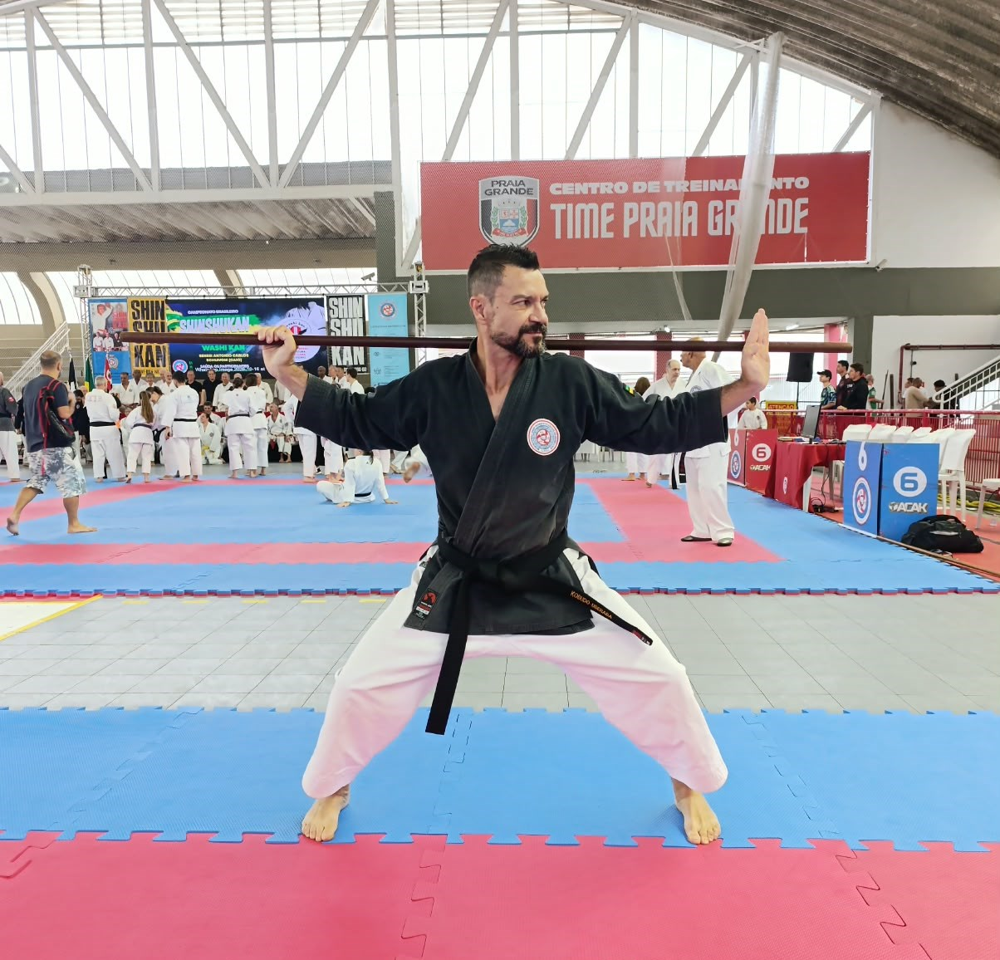

Conquista
Professor de Uberaba conquista campeonato brasileiro e faixa-preta de Kobudo
O JM Online destaca a conquista do campeonato brasileiro e a graduação de Welington à faixa-preta de Kobudo.
Ler matéria no JM Online